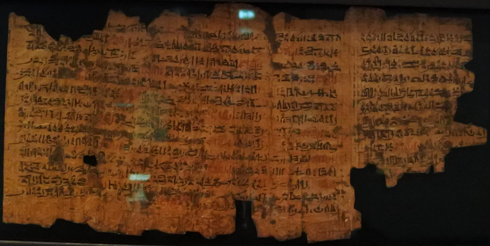

Ipuwer Papyrus

- Find Name
- Ipuwer Papyrus
- Description
- A damaged hieratic papyrus of 17 columns containing 'The Admonitions of Ipuwer,' in which a sage describes Egypt turned upside down: the river is blood, servants grow rich, plague spreads, and the poor take the nobles' gold. The surviving copy dates to c. 1250 BC (Nineteenth Dynasty) while the composition is dated c. 1850-1700 BC (late Twelfth Dynasty). Acquired in 1828 through Giovanni Anastasi, probably from the Memphis-Saqqara area, it is now in the Rijksmuseum van Oudheden, Leiden (Papyrus Leiden I 344 recto), first fully edited by Alan Gardiner in 1909.
- Historical Period
- New Kingdom copy of a Middle Kingdom composition
- Evidence Class
- Disputed
- Interpretations
- The Ipuwer Papyrus is OFTEN linked to the Exodus plagues, especially 'the river is blood,' but that link is debated and mainstream Egyptology rejects the equation: the composition predates any plausible Exodus date by centuries, and the text belongs to the Egyptian 'national distress' literary genre, a stylized lament about social collapse, not a historical report. A minority (Velikovsky, David Rohl's revised chronology) defends the Exodus connection. The honest presentation is: a striking parallel in wording, not proof of the plagues.
- Alternative Names
- Papyrus Leiden I 344; Admonitions of Ipuwer
- Related Places
- Related Books
- Related Events
- Scripture Illuminated
- Biblical Significance
- Its 'river is blood' language is the closest Egyptian literary parallel to the first plague, and it shows that Egyptians themselves wrote about Nile disasters in these terms; the parallel is suggestive, not proof, and must be labeled as debated.
- Artifact Date
- Copy c. 1250 BC; composition c. 1850-1700 BC
- Current Location
- Rijksmuseum van Oudheden, Leiden
- Date Discovered
- 1828
- Discovery Location
- Memphis-Saqqara area, Egypt (reported)
- Timeline Era
- Exodus and Wilderness
Awaiting Review Not yet checked against scholarly sources. Treat its claims as provisional until this entry is reviewed. About verification
Sources: https://hebrewexplorer.com/archaeology/ipuwer-papyrus/
https://en.wikipedia.org/wiki/Ipuwer_Papyrus
https://en.wikipedia.org/wiki/Ipuwer_Papyrus
Last reviewed: not yet reviewed